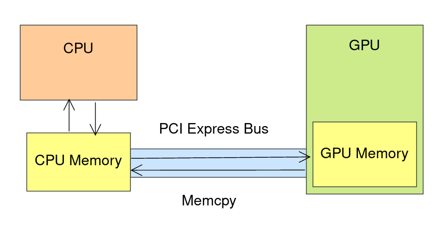

#include <sycl/sycl.hpp>
#include <vector>
int main() {
constexpr int N = 5;
std::vector<int> a{1, 2, 3, 4, 5}, b{5, 4, 3, 2, 1}, r(N);
std::vector<int> expected{6, 6, 6, 6, 6};
sycl::queue q;
int *devA = sycl::malloc_device<int>(N, q);
int *devB = sycl::malloc_device<int>(N, q);
int *devR = sycl::malloc_device<int>(N, q);
q.copy(a.data(), devA, N);
q.copy(b.data(), devB, N);
q.wait();
q.parallel_for(N, [=](sycl::id<1> idx) {
devR[idx] = devA[idx] + devB[idx];
}).wait();
q.copy(devR, r.data(), N).wait();
sycl::free(devA, q);
sycl::free(devB, q);
sycl::free(devR, q);
assert(r == expected);
}
#include <sycl/sycl.hpp>
#include <vector>
int main() {
constexpr int N = 5;
std::vector<int> expected{6, 6, 6, 6, 6};
sycl::queue q;
int *a = sycl::malloc_shared<int>(N, q);
int *b = sycl::malloc_shared<int>(N, q);
int *r = sycl::malloc_shared<int>(N, q);
for (int i = 0; i < N; ++i) {
a[i] = i + 1;
b[i] = N - i;
}
q.parallel_for(N, [=](sycl::id<1> idx) {
r[idx] = a[idx] + b[idx];
}).wait();
std::vector<int> result(r, r + N);
assert(result == expected);
sycl::free(a, q);
sycl::free(b, q);
sycl::free(r, q);
}